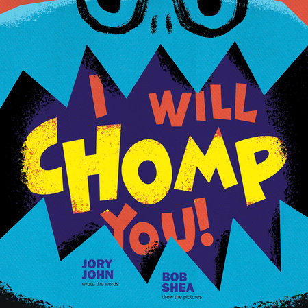

<body>


<pre><b>
STOP RIGHT THERE. Don't move a muscle, buster. Stay out of this book or I WILL CHOMP YOU!

So says the not-so-fierce inhabitant of I Will Chomp You! , a tale of deception, greed . . . and cake!

In their funny read-aloud, Jory John and Bob Shea bring a fresh twist to a time-tested blueprint as their little monster threatens,
 reasons, and pleads with readers to go no further in the book because he will NOT share his beautiful, delicious cakes.
 Children will identify with the monster's high valuation of his possessions, and (importantly) will laugh at the silly measures he takes to protect them.

"A monster's reign of terror begins even before the title page: "HEY. GO AWAY."
 Turn to the title page and there the monster waits, blue-skinned and angry-eyed: "I WILL CHOMP YOU!" 
As the reader turns the pages, the monster's direct-address threats increase: "If you turn any more pages..
.I WILL CHOMP YOU, BUSTER!" Another page turn and the monster is even angrier: "NOW QUIT IT!" Until finally, "HEY! I'm warning you!
You've been officially WARNED! CHOMP!" Unfortunately for the monster, the reader is just too fast, and its chomp misses the mark
. The monster proceeds to bite, yell, and barrel its way through the pages, repeatedly trying to halt-by-chomping the reader from reaching its secret hidden in the back pages of the 
book ( psst , it's cake). 
This book, written entirely as monster monologue, is all bright colors and sharp edges, creating a feeling of temper-tantrum immediacy that matches the silly-angry words. Shea's illustrations are bold but not too busy, giving the impression of fast movement and strong emotions, and the striped shirt-wearing monster is lovable in an ankle-biting kind of way. The fast pace, funny faces, and silly secret make this a great read-aloud." -- Siân Gaetano THE HORN BOOK

Review by Booklist Review

*Starred Review* When the blue monster with the sharp teeth says, I will chomp you (which he does frequently), he is talking to you, the reader. Turn any more pages, buster, and his teeth are going to bite right down (which they do frequently). Luckily, the blue monster isn't so great at the chomping: Well, I missed. But I won't miss again. Though he starts out right in your face, the monster becomes a bit more unctuous as the book continues. Soon, he is pleading for the book to be put down. Why does he care so much? In a hysterical spread, it's revealed why the book is off-limits: it's where he keeps his cakes. Luscious, sprinkled, frosted, pineapple upside-down cake, pineapple right-side-up cake, and so much more. There's more chomping as the book continues, and readers will enjoy the way a one-joke story can turn inside itself. Shea's stylized graphic artwork is a perfect match for John's text, which gets some of its oomph from the ever-changing font. The scared rabbits and frightened frogs that are only a hop away from disaster on every page add to the silly fun. A clever chomp of a romp.--Cooper, Ilene Copyright 2015 Booklist

From Booklist, Copyright (c) American Library Association. Used with permission.Review by Publisher's Weekly Review

It's by now a familiar metafictive device-the bully inside the book who threatens readers with certain doom. "If you turn any more pages... I will chomp you, buster!" growls a blue monster that Shea (the Dinosaur vs. series) gives massive jack-o-lantern jaws and menacing charcoal eyebrows. He isn't too scary, though. For one thing, a rabbit, frog, and bird hover close to the monster's jaws and-like readers-escape every "Chomp!" "Well, I missed," admits the monster. "But I won't miss again." Halfway through, he fesses up: "You're probably wondering why I'm so eager to chase you away. Can you keep a secret? It's because I have all my cakes back here, at the end of the book." Tempting descriptions and appetizing pictures à la a 1950s dessert cookbook follow: "Cakes with sprinkles. Cakes with chocolate." There's more desperate chomping as the monster obliterates his stash before readers can get to it. Nothing's as fun as the dopey evildoer who can't win, and John's (Goodnight Already!) comedy makes this a surefire read-aloud for any crowd of cake-lovers. Ages 3-7. Agent: Steven Malk, Writers House. (Aug.) © Copyright PWxyz, LLC. All rights reserved.

(c) Copyright PWxyz, LLC. All rights reservedReview by School Library Journal Review

PreS-Gr 1-In this superbly paced book, a toothy blue monster tries to prevent readers from turning the page. The monster delivers his admonishments with plenty of frenzied bluster ("You've been officially WARNED!"). Disobedient readers will relish outmaneuvering the "CHOMPS" that bite through the scenes, while a bunny rabbit, frog, and bird nervously flit and flee in the background details. The monster's clever threats, wheedles, and plea bargains are all in an avaricious attempt to conceal a cornucopia of fancy cakes. As the end of the book draws near, the greedy monster gobbles up all of the desserts. His delicious comeuppance is a tummy ache. Shea's riotously bold cartoon illustrations are an explosion of energy and color. VERDICT Expect to serve up second and third helpings of this delectable read-aloud delight.-Linda Ludke, London Public Library, Ontario, Canada © Copyright 2015. Library Journals LLC, a wholly owned subsidiary of Media Source, Inc. No redistribution permitted.

(c) Copyright Library Journals LLC, a wholly owned subsidiary of Media 
</body>
